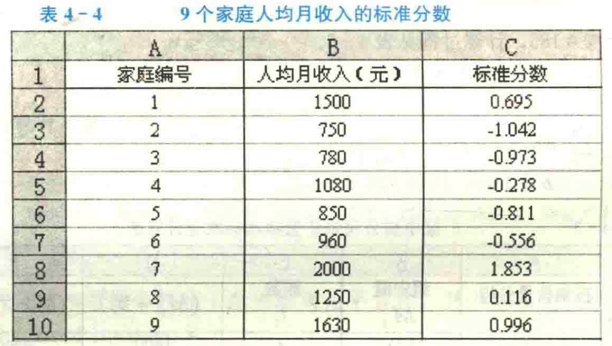
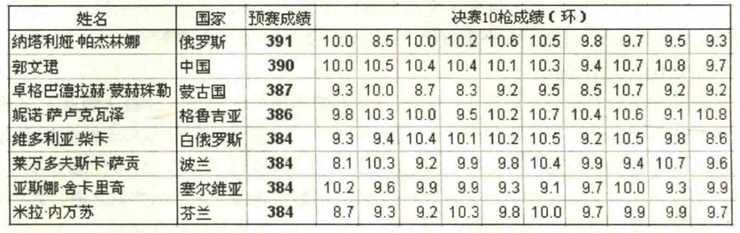
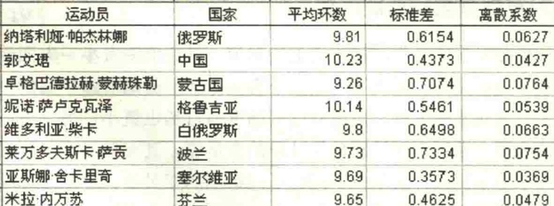

多组样本的对比比较
前面两篇文章，我们分别讲了如何衡量一组数据的集中趋势、离散趋势。
小时候，你想要知道你们班所有同学的成绩，普遍水平是多少。同学之间是否有多大的学分差异。就可以分别考察其集中趋势和离散趋势。
长大后，当你面临两家或两家以上的公司，想要知道这些公司对比起来，哪家工作水平更高，哪家收入差距更小。也可以直接分别计算两组数据的集中数值或离散趋势值。
多年后，当你想讨论，月薪1W的大城市和月薪2000的老家，何去何从。单纯的看大城市收入的绝对数字比老家高是不行的。更应该意识到的是，1W的收入，在大城市什么收入水平；2000的收入，在老家什么水平————这个水平，也就是我们本期要讲的标准分数。
本文，我们就讲一下，两组样本或者多组样本，其集中趋势、离散趋势，如何进行对比。
多组样本集中程度的比较：标准分数
对于收入，各地区的物价水平和消费水平很不相同，因此各地的贫富标准也不应该一样。如果用统一的标准来判断，那么很有可能在一个地区的首富，在另一个地区就是中下水准。
这其实是说，当均值和标准差不同时，一组数据的值不能与另一组数据的值相比较。但我们往往有需要进行这样的比较，怎么办呢？
别慌，有解。统计学中，在对多个具有不同量纲的变量进行处理时，常常会对各变量进行标准化处理。标准分数可以解决这个问题。
标准分数(standard score)，也称标准化值或z分数，是变量值与其平均数的离差除以标准差后的值。设标准分数为z,则有
标准分数具有平均数为0、标准差为1的特性。实际上，标准分数只是将原始数据进行了线性变换，它并没有改变一个数据在该组数据中的位置，也没有改变该组数据分布的形状，而只是将该组数据变为平均数为0、标准差为1。
比如，我们比较9个家庭的月收入，他们平均数是1200，标准差是431.68，计算出每个家庭的标准分数，如下表所示： 
我们可以说： 收入最低的家庭其人均月收入比平均数低450元； 收入最高的家庭其人均月收入比平均数高800元。
我们也可以说： 收入最低的家庭其人均月收入比平均数低1.042个标准差； 收入最高的家庭其人均月收入比平均数高1.853个标准差。
计算出一组数据中，各个数值的标准差，有什么好处？
举两个例子：
- 我们可以对比两只不同售价的股票，哪一只升值更明显
- 我们可以对比不同年代，人均收入的差异是否在扩大
在这些例子中，我们就可以计算标准得分(不改变数据分布，将原始数据进行了线性变换)，进行数据的比较(各种统计学的计算和可视化方法)。
多组样本离散程度的比较：离散系数
方差和标准差是反映数据离散程度的绝对值，其具备两个属性：
- 一方面，其数值的大小受原变量值自身水平高低的影响，也就是与变量的平均数大小有关，变量值绝对水平高的，离散程度的测度值自然也就大，绝对水平低的，离散程度的测度值自然也就小
- 另一方面，它们与原变量值的计量单位相同，采用不同计量单位计量的变量值，其离散程度的测度值也就不同
在实际应用中，因为这两个特点，我们会遇到以下三类典型问题：
- 平均水平不同的数据没法比：某动物园里，不同大象的体重标准差是100KG，不同金丝猴的体重差异是10KG。你不能说“因为不同大象体重的标准差更大，所以不同大象的体重更离散”。
- 计量单位不同的数据没法比：新生儿体重的波动范围在500g左右；某厂子的一批显卡，好卡坏卡的寿命差距在10天左右。哪个数据更离散？
- 拿到一组数据，真实经验匮乏，不好判断是好是坏：你预测某连锁手机专卖店不同门店不同月份的月销量。标准差是5000。如果你不知道手机业行情，你觉得这数是正常情况，还是不正常？
因此，对于平均水平不同或计量单位不同的不同组别的变量值，不能用标准差直接比较其离散程度。
如何比较不同样本，谁的离散程度更大呢？
如何消除变量值水平高低和计量单位不同对离散程度测度值的影响呢？
————离散系数来了。
离散系数(coefficient of variation)也称为变异系数，它是一组数据的标准差与其相应的平均数之比。其计算公式为：
- 离散系数大，说明数据的离散程度也大；离散系数小，说明数据的离散程度也小。
- 当平均数接近零时，离散系数的值趋于增大，此时必须慎重解释。
奥运会女子10米气手枪比赛的规则为：
- 预赛10选8：每个运动员首先进行每组10枪共4组的预赛，然后根据预赛总成绩确定进入决赛的8名运动员
- 决赛定名次：决赛时，8名运动员再进行10枪射击，将预赛成绩加上决赛成绩以确定最后的名次
在2008年8月10日举行的第29届北京奥运会女子10米气手枪决赛中，进入决赛的8名运动员的预赛成绩和最后10枪的决赛成绩如下：

我们要是想知道哪名运动员的发挥更稳定。分析思路应该是：
- 先计算平均数，然后比较平均成绩差别是否较大
- 如果各运动员决赛10枪的平均成绩差异小，可以使用标准差，大概看谁更稳定
- 如果各运动员决赛10枪的平均成绩差异大，就需要计算离散系数，更严谨
8名运动员最后10枪决赛的平均成绩、标准差和离散系数如下所示：

从离散系数可以看出，在最后10枪的决赛中：
- 发挥比较稳定的运动员是塞尔维亚的亚斯娜·舍卡里奇和中国的郭文
- 发挥不稳定的运动员是蒙古国的卓格巴德拉赫·蒙赫珠勒和波兰的莱万多夫斯卡·萨贡
- 标准差：蒙古运动员<波兰运动员；离散系数：蒙古运动员>波兰运动员。所以本次运动会中，蒙古国的卓格巴德拉赫·蒙赫珠勒，发挥最不稳定。
总结
本文，我们学习了，两组样本或者多组样本，其集中趋势、离散趋势，如何进行对比。
- 标准分数，并没有改变一个数据在该组数据中的位置，也没有改变该组数据分布的形状，它只是将原始数据进行了线性变换，使我们可以对比多个具有不同量纲的变量
- 离散系数，帮我们消除了变量值水平高低和计量单位不同对离散程度测度值的影响，使我们客户以刻画平均水平不同或计量单位不同的不同组别的离散程度
学习这种种能力还有其更高的意义。上面两部分内容，从更高的层级来看，其实是 对数据进行标准化的能力；构造更抽象的系数的能力。它们也是在应用统计中常用的能力。在后面的文章中，我们会提到各种经济指标、业务指标，各种各样的标准化方法。让我们拭目以待。
参考文献：
- 孙静娟主编.《统计学》.清华大学出版社.2015：18-20.
- 袁卫,刘超.《统计学--思想、方法与应用》(第二版).中国人民大学出版社.2011.
- 贾俊平,何晓群,金勇进.《统计学》(第七版).中国人民大学出版社.2018.